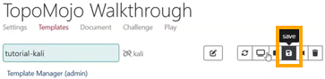
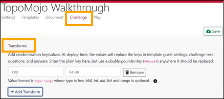
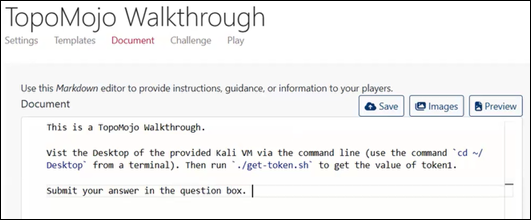
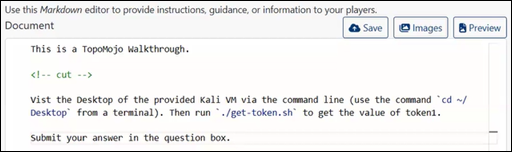
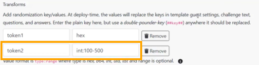
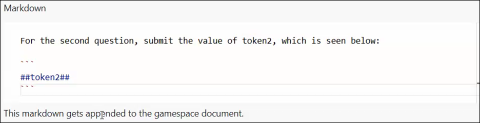
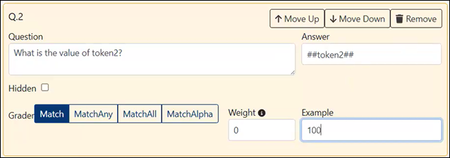
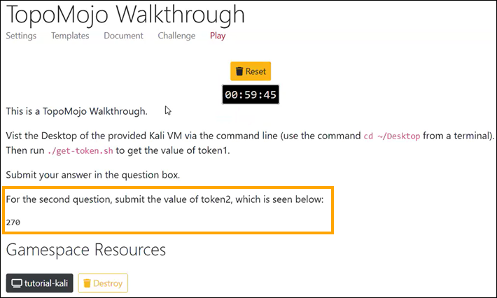

Creating a TopoMojo Challenge
This tutorial shows you how to create and configure a cybersecurity challenge in TopoMojo, from defining the workspace and resources to preparing the challenge for participant use.
Assumptions
This tutorial assumes the following:
- You have access to a TopoMojo instance
- You have the
Creatorrole or greater in TopoMojo - You have a basic understanding of virtualization and networking concepts
- You are familiar with supported hypervisors like VMware and Proxmox
 As you work through this tutorial, you may want to learn more about the Crucible applications or features. If so, refer to the Related Resources section below for additional detail and reference information.
As you work through this tutorial, you may want to learn more about the Crucible applications or features. If so, refer to the Related Resources section below for additional detail and reference information.
Example
This tutorial uses screenshots with sample data to illustrate the steps. Any values shown in a monospace font and wrapped in backticks (for example, TopoMojo Walkthrough and A small example TopoMojo Walkthrough) are placeholders. Replace these values with your own to follow along and produce a working TopoMojo challenge.
Step 1: Creating and Configuring Your Workspace
- Log in to your TopoMojo instance.
- Click +New Workspace to create an empty workspace for the challenge.
-
Enter the workspace metadata. The list below describes some key settings. For additional detail, see the TopoMojo documentation, Building a New Workspace.
-
Title: Enter a title that identifies the challenge (for example, "Network Traffic Analysis"). For the purposes of this tutorial, we'll enter
TopoMojo Walkthrough. - Description: Enter a short description of the challenge (1–3 sentences). We'll enter
A small example TopoMojo Walkthrough. - Tags: Add tags to make the challenge easier to find. Use a space-delimited list (for example, "cyber-defense-analysis incident-response"). Tags are typically hidden from TopoMojo participants unless a consuming application, such as Gameboard, looks for specific tags. We'll enter
walkthrough. - Audience: Select the audience to control which users can view or play the challenge. We'll enter
everyonebecause we want everyone to be able to deploy this challenge. For a complete list of the settings, see the TopoMojo documentation, Settings.
Step 2: Adding Virtual Machine Templates
TopoMojo templates are starting-point virtual machines that you can customize. When a user deploys a gamespace, they receive read-only copies of all templates in the workspace from the template's last saved state. For full field descriptions and functions, see Templates in the TopoMojo Guide.
- In your TopoMojo workspace, click the Templates tab.
- Click + Add Templates to add VMs to your challenge. We'll search for, then add:
kalifrom the PC6 Stock Topology. -
Click Edit.
- Name: We'll enter
tutorial kali. - Description: We'll use the Description field to record the VM's credentials and provide a brief explanation. This field is not visible to end users. We'll enter:
creds: user/tartans. - Networks: To keep it simple, we'll enter
lan. The network name is arbitrary. VMware or Proxmox create the network with that name at deployment time. Templates in the same workspace that share the network name can communicate with each other. - Guest Settings: We'll cover guest settings in the sections below.
- Linked/Unlinked: We'll click
Unlinkbecause we want TopoMojo to create a new disk instead of referencing the parent template's disk.
- Name: We'll enter
Tip
A template set groups multiple published templates from the same workspace into a single, one-click deployment. This lets you add an entire topology at once instead of selecting each template individually.

Editing and Saving Template Changes
Unlinking gives the VM its own independent copy, which is where you make edits and save changes. The Initialize button appears at the top of the page because TopoMojo knows it needs a new disk but has not created it yet.
- Click Initialize. Initializing tells VMware or Proxmox to create a new disk and copy the backend artifacts. Once initialized, the Deploy button becomes available.
-
Click Deploy. Deploying the VM creates it in the workspace, where you make and save all edits to the challenge.

-
Click Console. For the purposes of this tutorial, we'll make two edits to the VM. We'll add a file called
example.txton the Desktop and we'll add a script calledsome scriptthat reads from the guest info variables. -
In the new browser tab, on the VM console's Desktop:
- Create a new
.txtfile calledexample.txt. - Create a new script called
get-token.sh.#!/usr/bintells the operating system to run the file using Bash.vmtoolsd --cmd "info-get guestinfo.token1"reads a VMware guestinfo variable namedtoken1.
-
Your script should look like this:
- Create a new
-
Make
get-token.shexecutable by runningchmodfrom a terminal.- Open a terminal in the VM.
-
Change to the directory that contains your script. For example:
-
Run the script:
-
Test the script.
We get No value found because we haven't configured the guest info variables yet.
After unlinking, initializing, deploying, and editing the VM, TopoMojo shows a Save icon for the template. Clicking Save creates a VM snapshot on the hypervisor. TopoMojo supports only one snapshot, and saving overwrites the previously saved state.

Warning
Always shut down the VM from within the console operating system before saving changes in TopoMojo. Saving in TopoMojo while the VM is powered on is similar to cutting power abruptly and can result in inconsistent state or unexpected behavior.
In TopoMojo, click Save. The changes we made to the VM, including the two files we added to the Desktop, will persist the next time TopoMojo deploys the VM.
Step 3: Configuring Transforms, Guest Settings, and Questions
Adding a Transform
If you recall, the script we wrote reads the value of a guest info variable named token1. You configure this variable in the Transforms section of the Challenge tab.

- Navigate to the Transforms section of the challenge.
- Set the Key (name) to
token1. The key is the name of the variable. - Next to the Value, expand the tooltip (the i). The tooltip shows what kinds of values TopoMojo can generate. You can use values such as a gamespace ID, variant ID, hexadecimal or base64 strings, random integers, or universally unique identifiers. You can also constrain values, for example by generating exactly 12 hexadecimal characters (hex:12) or a number within a specific range (such as 99–999).
- Set the Value to
hex. That generates 8 hexadecimal characters inside a variable calledtoken1.

Adding a Question
We can now add a question that asks for the value of token1.
- Navigate to the Question Set section on the Challenge tab.
- In the Question field, enter
What is the value of token1? - In the Answer field, enter
##token1##. We use the "double-pound" notation because we want to reference the transform value in the answer. This double-pound syntax performs variable replacement when deploying a gamespace. - For Grader, use the Match grading type so the participant must enter the value exactly as it appears.
- For Example, enter
abcd1234. Because the transform generates an 8-character hexadecimal value, we want to show participants what the answer format should look like. - Click Save.
Note
The other Grader types are fully documented in the TopoMojo Guide under the Question Set section.
Updating the Guest Settings
After saving the changes on the Challenge tab, the transform becomes available for use.
- Click the Templates tab. We're going to configure our Kali template to receive that transform through its guest settings.
- Under Guest Settings, enter
token1=##token1. The guest info variable requires two pieces of information: a name (key) and avalue. TopoMojo now knows to insert the value of the token1 transform into the guest settings when it deploys the virtual machine. - Click Deploy.

At this point, the behavior differs slightly depending on where TopoMojo deploys the VM. When TopoMojo deploys a gamespace, it performs variable replacement across the entire gamespace. TopoMojo replaces the ##token1## template with a randomly generated value, and that value appears everywhere TopoMojo references the template.
This replacement does not occur in a workspace. As a result, when you (the TopoMojo admin who is building the challenge) run the grading script (./get-token.sh) in a workspace, the script returns the literal value ##token1##. This confirms that you've set up the guest info variable correctly. This expected behavior provides a valid way to test the challenge while working in a workspace.
- Open a terminal in the VM (the one you just deployed).
-
Change to the directory that contains your script. For example:
-
Run the script:

Step 4: Writing the Challenge Document
Every good lab or challenge should include a document that gives participants clear, structured instructions for understanding the objectives and completing the exercise effectively.
- Click the Document tab.
-
In the editor, type the following:
-
Click Save.
Your lab document should look like this.

Using a Cut Line
TopoMojo supports a special "cut line" using an HTML comment: <!-- cut -->. TopoMojo shows document content above the cut line as a preview before users deploy the challenge and hides the remaining instructions until the challenge starts. Use a cut line to give participants an overview without revealing all of the details up front.

Step 5: Playing the Challenge
At this point, the challenge includes a transform, guest info variable, instructions, and a question to answer. We're ready to "play" our challenge to test it.
- Click the Play tab. Notice that only the top portion of the document - everything above the cut line - is visible. As part of testing, you can adjust settings such as Variant (if the challenge supports variants, you can select a specific variant to deploy; selecting
0chooses a random variant); Max Attempts, Max Minutes (i.e., challenge duration), and Point Value. These controls exist only for developer testing. End users do not see this interface, and any changes made here do not persist if you switch tabs. - Click Start. Once the gamespace finishes deploying, you can view the full challenge document.
-
Follow the lab instructions.
- Launch the Kali VM.
- Run
get-token.shto retrieve the generated value. - Copy it from the VM using the clipboard in the Settings cog.
- Paste it into the answer field in TopoMojo.
- Submit the answer. When you submit the correct answer, TopoMojo marks the challenge complete and automatically cleans up the gamespace.
The screenshot below shows the terminal in the gamespace after running get-token.sh. The script outputs a randomly generated value, confirming that the transform replaced the placeholder template syntax with an actual value at deployment time.

At this point, you have a complete, working TopoMojo challenge and the tools to build on it!
Beyond the Basics (Optional)
Adding an Additional Transform
As a more advanced example, you can add an additional transform. Still in our TopoMojo Walkthrough workspace:
- Go to the Challenge tab.
-
Click Add Transform and add a new transform of type
int(an integer between 100 and 500) calledtoken2.
-
Scroll down to the Markdown section just below Transforms section. This Markdown field is special: TopoMojo appends it to the end of the main challenge document when it deploys the gamespace. Unlike the main document section, this markdown supports transform substitution, which lets you reference values such as
##token2##directly in the instructions. You can use this area to add extra guidance or follow-on questions without revealing them before deployment. In this Markdown field, enter:
(The code fences are not necessary, but we included them for formatting purposes.)
Adding a New Question
After adding the transform, create a new question that asks for the value of token2.
- Click Add Question and type the following:
What is the value of token2?. - For the Answer, enter
##token2##. - For the Example, enter
100. - Click Save.
Question 2 should look like the screenshot below.

To see how Question 2 behaves, you'll "play" the challenge again.
Click the Play tab. The original document ends at Submit your answer in the question box. but our new markdown appears too.

The transform value resolves to the generated number, in this example, 270.
Submit 270 as the answer to Question 2: What is the value of token2?.
Introducing Variants
You can extend a challenge by introducing variants. Variants let you create small, controlled differences between deployments by changing values, questions, or instructions while keeping the overall structure and difficulty consistent.
What is a variant?
A variant describes a different version of a challenge. Variants can include different ISO attachments, different virtual machines, and different questions and answers.
First, you'll add a variant transform. Still in our TopoMojo Walkthrough workspace:
- Go to the Challenge tab.
- Click Add Transform.
- Add a new transform type of
variantandvariant.
Next, you'll enter the details for your new variant.
Caution
Variant indices use zero-based numbering. Variant 1 has an index of 0.
- Select Variant 1.
- Click Details.
- In the Markdown section, enter:
The variant 1 index is: ##variant##. This markdown appends to the end of the challenge document, just like the Question 2 markdown you added earlier. - Scroll down and click Add Question.
- Enter the following values:
- Question:
What is the variant index? - Answer:
##variant## - Example:
0
- Question:
- Click Save.
Adding a Second Variant
We'll add a second variant to show how the same challenge can change slightly between deployments while staying the same in structure and difficulty.
- Click Add Variant.
- Clone Variant 1.
- Leave the first two questions unchanged. For Question 3, update the markdown to read:
The variant 2 index is: ##variant##.
In practice, avoid telling participants which variant they receive because variants help discourage answer sharing.
Using Different Questions with Variants
You can create variants by asking different but equivalent questions. For example, one variant might ask for the SHA-1 hash of a file, while another asks for the SHA-256 hash of the same file. The effort and difficulty stay the same, but the question and answer differ.
Remember to Save your work.
Testing Variants by Playing the Challenge
To see how your variants behave, play the challenge again.
- Click the Play tab.
- Leave Variant set to
0to deploy a random variant. - Click Start to play the challenge. TopoMojo deploys one of the variants and appends the variant-specific markdown to the end of the instructions. If you receive Variant 2, the index equals
1. - Enter
0or1for the variant index question, depending on which variant you received. - Click Submit to submit your answer and confirm success.
You can also ask TopoMojo to deploy a specific variant.
- Click Play again.
- Enter
1in the Variant field. - Click Start.
TopoMojo deploys Variant 1, and the variant index equals 0.
For additional details, see Variants in the TopoMojo Guide.
Virtual Machine Template Best Practices
- Unlinking Templates: Use linked templates whenever possible. Linked templates reduce backend storage use and provide a shared, consistent VM environment that users can become familiar with across challenges.
- Use a Challenge Server: Use a dedicated challenge server VM as the control point for the challenge. A challenge server can run startup scripts, host grading logic or websites, collect logs, and perform automation. This approach lets you maximize the use of linked templates by placing configuration, automation, and grading on a single unlinked VM. We provide a reference challenge server on GitHub: github.com/cmu-sei/Challenge-Server.
- Template Visibility: Set templates as visible or hidden. Visible templates expose a UI console to users. Hidden templates do not expose a UI console but may remain accessible over the network. Hide templates that users should not access directly, such as attacker or backend systems.
- Template Naming: Use clean, descriptive names for templates. Avoid tags, IDs, or internal details in visible template names. Use unique or structured names for hidden templates to help administrators identify resources during troubleshooting.
- Template Count: Add VM templates only when required. Fewer templates reduce infrastructure usage and keep challenges easier to understand and maintain.
- Clean Before Saving: Clean templates before saving them. Remove command and browser history, delete logs, and remove development artifacts or files to prevent unintended hints or shortcuts.
Troubleshooting Common Issues
VM Changes Don't Persist
- Confirm that you unlinked the template.
- Confirm that clicking Save does not produce an error in the TopoMojo UI.
- Review TopoMojo API logs and hypervisor logs (VMware or Proxmox) for errors related to saving the VM.
Transform Values Don't Appear in VMs
- Remember that TopoMojo applies transform values at gamespace deploy time; they do not appear in workspaces.
- Confirm that you configured guest settings correctly and that variable names match exactly (case sensitive).
- Confirm that you use the correct command for your hypervisor.
Related Resources
- Challenge Development Guidelines for Cybersecurity Competitions: This paper draws on the SEI's experience to provide general-purpose guidelines and best practices for developing effective cybersecurity challenges.
- Crucible Documentation
- TopoMojo Guide
- TopoMojo GitHub Repository